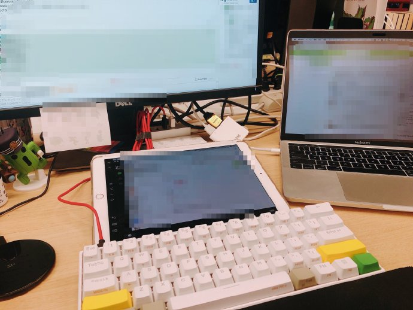
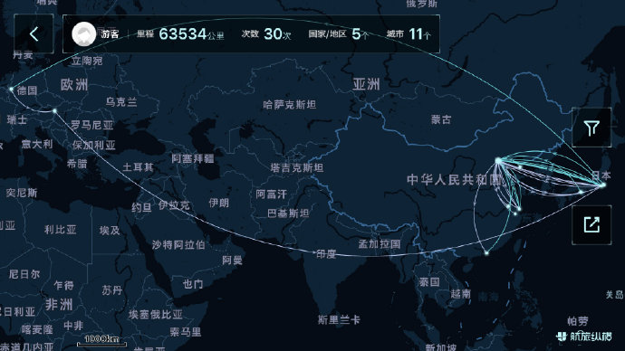
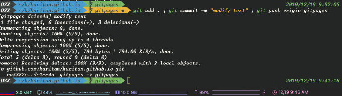

年末年始の休み気分になる前に、今年、自分の周辺に起こった事を整理したく、こちらのブログを書きました。
つまらぬ事ばっかりですが、少しだけのお時間、頂戴したいと思います。
Life
VISA
Tokyoで働く外国人として、今年無事在留期間が更新され、5年有効のモノをいただきました。
これで安心して、少なくとも日本でまだ5年間働けるようになりました。
また、当分野の実務経験も積んで、来年末そろそろ高度人材VISAを申請できる時期になりそうで、永住資格もそう遠くない感じですね。
Career
今年の春頃、今の会社に転職して、情シスのエンジニアもどき(?w)から、偽SRE（??w）にロールチェンジしました。
SREはSite Reliability Engineering(or Engineer)の略
当時のお話はこちらのブログに書かせていただきましたので、
ご参考になっていただけたら、嬉しい限りです。
Family
彼女とネコ一匹、たまにケンカするんですが、小さな幸せを感じながら、東京生活満喫しています。
猫はノルウェージャンフォレストキャット、とても肥満な体で、我が家では最近、「豚」呼ばわりとされている
Work
WEB界隈のエンジニアとして、今年自分が触った技術類のモノも一応まとめます。
Cloud & VPS
業務
- AWS
- GCP
- IDCF
- IIJ(GIO)
趣味
- Arukas
- Vultr
主に上記となりますが、割合としてやっぱりAWSが一番使わせていただき、GCPは主にGKE、Spanner、GAEを中心に注力しております。
もちろん、ポチポチもあるんですが、terraformを駆使し、リソースの自動作成や冪等性維持に注意を払っています。
今の部署に入ってから、
ツール類のキャッチアップ -> 社内用サービスの改修&クラウド移行 -> 本番サービスのメンテ対応＆移行 -> ……
などを経て、今期からガチの本番サービスインフラ担当者となりました。
また、kubernetesをベースにしたマイクロサービス化も注力しつつ、EKS(AWS)やGCP(GKE)、あとRancherも触ったりとかしています。
うゎ〜この先も頑張らないとっ！
Programming
- Shell
- Python
- Ruby on Rails
- Golang
- TypeScript
社内は主にRuby on Railsがメインとなっていますが、様々な言語やフレームワークにもアプローチされている。
正直、会社に入ってすぐ、Ruby On Railsの古いアプリをGAEに移行し、サーバレス改修頼むぞや費用削減で社内用のサービスアーキテクチャ見直しよろしくって言われた時、結構ヒヤヒヤしましたね。
幸い、大きなトラブルなく、段々と会社の技術ストックに馴染み始めました。
DevOps(SRE)
現職は社外向けのサービスインフラを支える技術職で、いわゆるSRE（Site Reliability Engineer）の定義に近い存在です。
DevelopmentもOperationsも、自分らでやる立場となっており、サービスの可用性や品質を向上するため、なんでもやれー的なポジションですね。
以前と比べて、結構codeレベルでOSSの挙動を探ったり、DBの内部を覗くようになりました。
例えば、ついこの間もMySQLの難題に引っかかっていました。
この類の問題は、ほぼ毎日のように、遭遇しちゃう感じですね。
クラウドプロバイダーの新しいサービスや機能がリリースされたら、それに活用する方法も考えたりして、費用削減＆面倒退治にとことん追求しています。
チーム全体はInfrastructure as Codeをポリシーとした構成管理を行って、スケールしやすい構成となっています。
- Gitlab/Github
- Terraform, Packer
- Ansible, Chef(Itamae)
- Mackerel, Zabbix, Pagerduty, NewRelic
- MySQL, Redis, Memcached
- Vagrant, Docker, Kubernetes, Openstack
基本は上記ですが、各種ミドルウェアを中心に、随時新しい技術や製品の評価＆選定を行っている。
この間、macOSをcataliaにあげて、sidecar機能を試した時のMyデスク

来年の重心はたぶん下記となるので、仕事量半端ないっすね。
- 基盤SLAの測定方法の確定と実績測定
- CloudSpanner(GCP)の考察と導入
- GKE(GCP)の運用方法検討
- Fargate for EKS(AWS)の運用方法検討
- 社内k8s環境Rancher(EKSベース)の整備
- 本番サービス全面マイクロサービス化に伴い、ベストプラクティス検討
- 会社標準dockerイメージの定義と提供
- アプリ開発陣の説明
Events
Public
AWSとGCPのイベントに行って、勉強になるセッションはたくさんありました。
いつか、その舞台に立って、自分のノウハウをシェアできるように日々チームメンバーと切磋琢磨してますー
Private
入社後の初露出として、kubernetesについての初歩的な内容を発表しました。
今後20年のLinuxと呼ばれるkubernetesですが、
関連パーツやエコシステムがあまりにも膨大で、自分はまだ右も左も分からない状態で、よく痛感しています。
余力のある方には、ぜひkubernetesをチャレンジしてみてください。やっておくと、絶対損はないですよ。
P.S. 基本的にはGKEがおすすめですー
Tour
Deutschland(Germany)
夏休みで、彼女と二人海外旅行に行きました。
ずっとヨーロッパに興味津々の僕にとっては、本当にすばらしい思い出でした。
特に、夜21時過ぎ、太陽を見ならが夕飯を食べる体験で、かなり不思議の気分でした。
ドイツは高緯度地域ので、夏の日照時間が長い
HasBeenTo
スマホアプリで、自分が飛行機で行ったことのあるところを記録できるモノがあって、
よくみたら、僕も5国(地域)に行ったりしたんですね。
- 中国内
- 日本内
- 香港・マカオ
- ドイツ
- オーストリア
暫定合計
- マイル：63,534 km
- 飛行回数：30 回
- 国(地域)：5 箇所
- 都市：11 箇所

Languages
English
海外旅行もしてて、やはり英語の重要性に気が付きますね。
ITの世界は、しばらく欧米を中心とする態勢が変わることが難しいそうなので、
ガチでEnglishを勉強しないと、そのうち時代遅れになりかねないかもしれません。
Japanese
最近ではないが、段々と自覚しています、自分の日本語はまだまだということ。
いい感じに自分の意図や考えをお伝えできず、皆様にご迷惑かけたことを深くお詫び申し上げます。さっせんでしたー
自分の仕事の話は大体できるようになりつつ、今後がカルチャーやギャグにアプローチしてみようと思います。
Blog
最後に、こちらのブログを含め、今年はなんと！12回も更新させていただきました！
ちょうど1ヶ月1回の頻度で、自分の中では、いい感じに年を締めくぐったつもりですね。
来年も、よろしお願いいたします！
【よっしゃ！ブログ更新するぞー】
